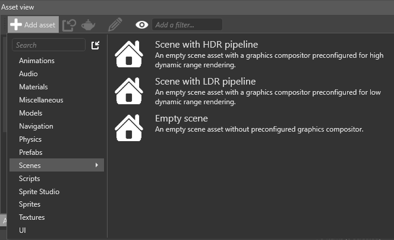
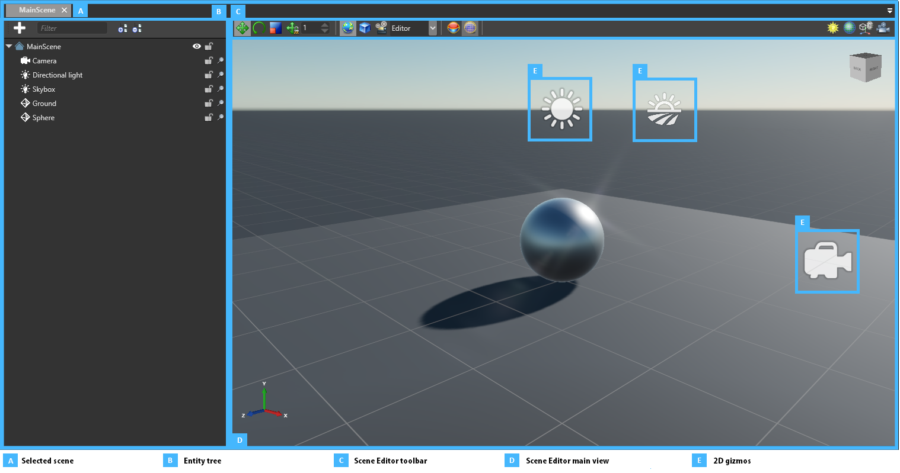

シーンの作成
初級 レベル デザイナー
新しいプロジェクトを作成すると、初期シーンが作成されて、ライト、カメラ、スカイボックスなどの基本的なエンティティが設定されます。
他のアセットと同じようにシーンを作成できます。シーンは複雑なアセットなので、専用のエディターであるシーン エディターがあります。
シーンを作成する
［Asset view］(既定では下部のペイン) で［Add asset］をクリックして、［Scenes］を選択します。

適切なシーン テンプレートを選択します。
テンプレート 結果 Empty scene エンティティまたは事前構成済みのレンダリング パイプラインがない空のシーン Scene with HDR pipeline 基本的なエンティティを含み、HDR レンダリング用に事前に構成されているシーン Scene with LDR pipeline 基本的なエンティティを含み、LDR レンダリング用に事前に構成されているシーン
シーン エディターでシーンを開く
［Asset view］で次のいずれかを行います。

- シーン アセットをダブルクリックします
- アセットを右クリックして、［Edit asset］を選択します
- アセットを選択して、Ctrl + Enter キーを押します
Tip
複数のシーンを同時に開くことができます。
シーン エディターを使用する

シーン エディターのタブ (A) には、開いているシーンの名前が表示されます。タブを使用して、表示するシーンを切り替えることができます。
エンティティ ツリー (B) には、シーンに含まれるエンティティの階層が表示されます。同じエンティティ階層が実行時に適用されます。エンティティ ツリーを使用して、エンティティの参照、選択、名前の変更、整理を行うことができます。
ツール バー (C) を使用すると、エンティティを修正し、シーン エディターの表示を変更できます。
メイン ウィンドウ (D) には、シーンの簡潔な表現が表示され、その内部にエンティティが配置されています。形状を持たないエンティティ (E) は、2D ギズモで表されます。たとえば、カメラはカメラ アイコンで表されます。